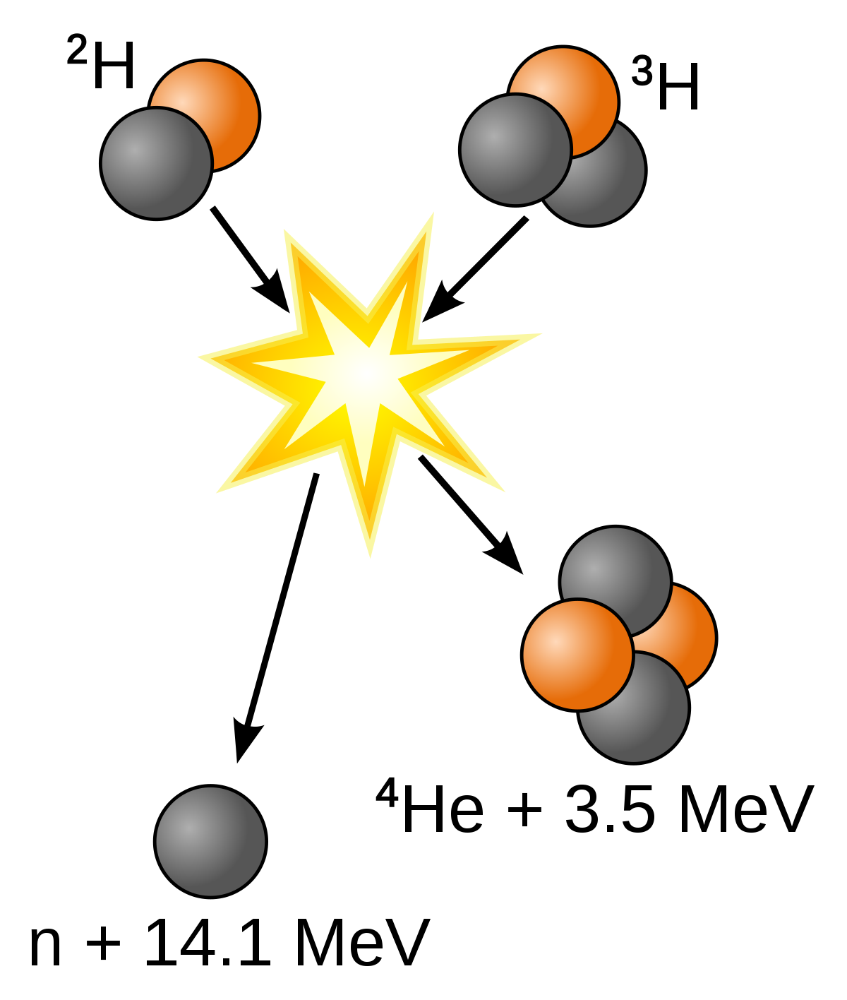

 Die Temperatur im Zentrum eines Sternes ist so hoch, das alle 1vollionisierten Atome miteinander wechselwirken, sodass es zu Kernfusionen kommt. Z. B.nehmen wir mal die beiden
2 Wasserstoffisotope Deuterium und Tritium, die zu Helium verschmelzen, wobei die Masse des Heliumatoms etwas geringer ist als die Masse der zwei benötigten Atome. Die Massendifferenz wird gemäß der Gleichung E=mc² in Bewegungsenergie
der Produkte der Kernreaktion umgesetzt. Das Bild, welches Sie rechts vom Text sehen ist nur eine Möglichkeit der Fusionierung von Wasserstoff (H) zu Helium (He). Es gibt auch noch die Proton-Proton-Kette, in der vier Protium miteinander fusionieren.
Die Energie die bei der Fusion entsteht gleicht die nach innen wirkende Gravitation Kraft aus, damit der Stern nicht in sich zusammenfällt. Die Energiefreisetzung funktioniert aber nur bis Eisen (Fe), weil ab dann die Masse des Kerns größer
als die Summe der Masse zweier möglicher Reaktionspartner ist. Da es jetzt gegen die Gravitation keine entgegenwirkende kraft mehr gibt Implodiert der Stern.
1 vollionisiert= im Temperaturbereich, in welchen Kernreaktionen ablaufen, sind keine Elektronen mehr an Atome gebunden.
Die ihnen zugeführte Energie in Form von Wärme ist viel zu hoch, als dass das sich Elektronen an Atome
binden könnten.
2 Isotope= Atome mit identischer Kernladung an Protonen, jedoch unterschiedlicher Anzahl an Neutronen werden als Isotope bezeichnet. Sie haben die gleiche Ordnungszahl, stellen daher das gleiche Element dar,
weisen aber verschiedene Massenzahlen auf.
2
H=Deuterium
3
H=Tritium
4
He=Helium
n=Ein Neutron wird
bei dieser Reaktion
freigesetzt
MeV=Megavolt